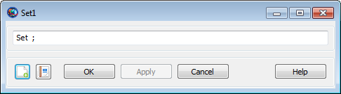

Set — Configure a resource from a data interface
Setdestinationsource(options)
The Set command retrieves data from
sourceoptionsdestinationdestination
See Also: FileInterface, Spacecraft
| Option | Description | ||||||||||
|---|---|---|---|---|---|---|---|---|---|---|---|
| The resource to populate from the data source.
| ||||||||||
| The data source from which to obtain data.
| ||||||||||
| Options specific to the chosen
|
The following options are available when
sourceTVHF_ASCII”:
Data={keyword[,
keyword, ...]}Comma-separated list of values to retrieve from the file.
Defaults to 'All', which retrieves all available
elements. The available keywords are documented in the “TVHF_ASCII” section of the
FileInterface reference.
|  |
The Set GUI is a very simple text box that lets you type the command directly. By default, it has no arguments, so you must finish the command yourself.
Read a TVHF file and use it to configure a spacecraft.
Create Spacecraft aSat
Create FileInterface tvhf
tvhf.Filename = 'statevec.txt'
tvhf.Format = 'TVHF_ASCII'
BeginMissionSequence
Set aSat tvhfRead a TVHF file and use it to set only the epoch and the Cartesian state.
Create Spacecraft aSat
Create FileInterface tvhf
tvhf.Filename = 'statevec.txt'
tvhf.Format = 'TVHF_ASCII'
BeginMissionSequence
Set aSat tvhf (Data = {'Epoch', 'CartesianState'})